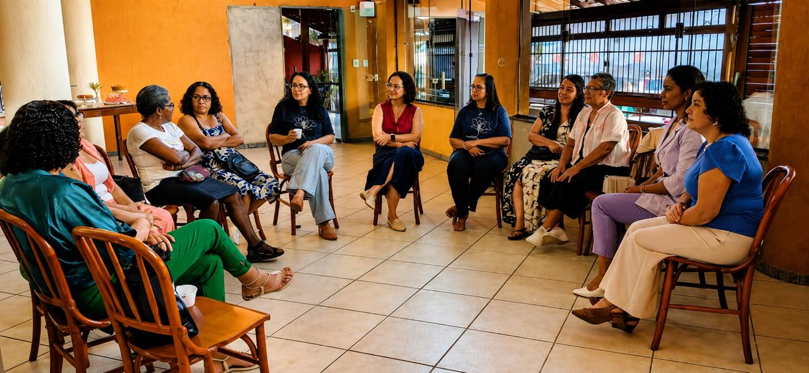
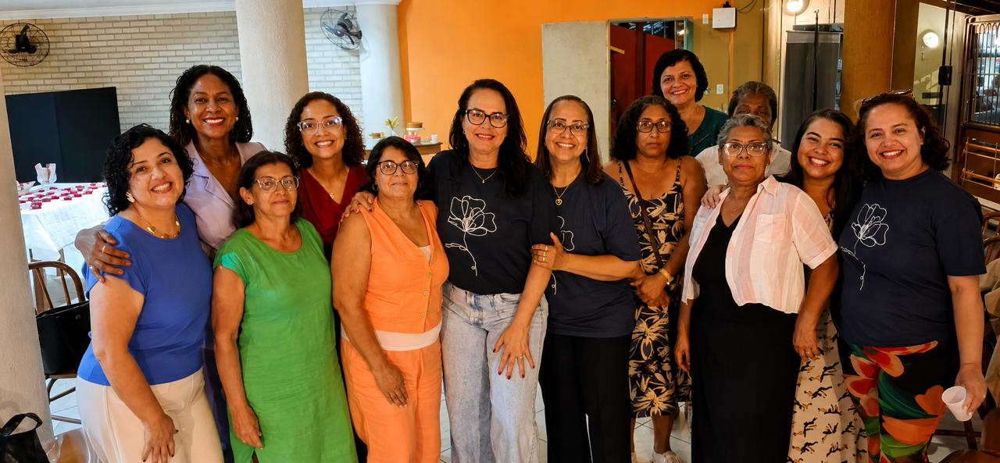
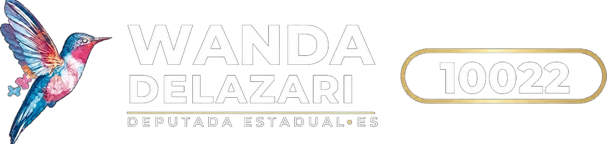
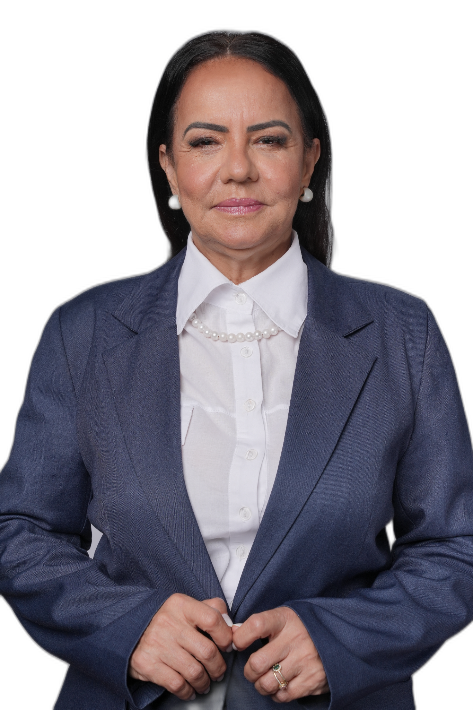

Receber mulheres que atravessam momentos difíceis e mostrar, na prática, que elas não estão sozinhas. Muitas vezes, tudo começa com uma escuta atenta, sem julgamentos. E isso, por si só, já é capaz de mudar uma história.




Eu sou Wanda Delazari. Antes de qualquer cargo, de qualquer partido e de qualquer disputa por cargo ou posição politica, eu sou mulher, sou família e sou de fé. É por aí que eu começo, porque é daí que vem tudo o que eu penso e tudo o que eu faço.
Eu não vim para a política por ambição pessoal. Vim por uma causa. Chegou um momento em que eu me cansei de promessas e de assistir de fora, de ouvir histórias difíceis e não ter como mudar nada além de uma vida por vez. Percebi que existe um limite no que a gente consegue fazer com as próprias mãos e que, depois desse limite, é preciso ter alguém lá dentro, decidindo, defendendo, brigando pela pauta.
Hoje sou vice-presidente do seguimento de Mulheres do Republicanos no Espírito Santo e lidero o Movimento Semeando Coragem. Foi no movimento que eu conheci de perto a realidade que muita gente só conhece por estatística. Conheci a mãe solo que acorda antes do sol, deixa o filho com a vizinha e trabalha o dia inteiro sem ter certeza se vai dar conta do mês. Conheci a mulher que sustenta a casa. Conheci a mulher que sofreu violência dentro da própria casa e não sabia a quem recorrer e que, quando procurou ajuda, não encontrou estrutura do outro lado.
Eu não vim de fora para falar dessas mulheres. Eu convivo com elas. Eu sento na mesa da cozinha delas, escuto, choro junto e depois vou atrás de resolver.
Minha fé é o que me sustenta nesse caminho. Não é um detalhe da minha biografia, é a base do meu caráter. É ela que me faz acreditar que nenhuma história está perdida e que sempre vale a pena recomeçar. É ela também que me faz respeitar profundamente a fé de cada pessoa, seja ela qual for.
E minha família é o meu chão. É por olhar para os meus que eu entendo por que a família precisa ser defendida como política pública, e não tratada como assunto particular. Uma família fortalecida sustenta uma comunidade inteira. Uma família fragilizada sobrecarrega a escola, o posto de saúde, a assistência social e o Estado inteiro.
Agora chegou a hora de dar o próximo passo: deixar de apenas apoiar e passar a representar. É por isso que eu me coloco como pré-candidata a deputada estadual pelo nosso querido estado do Espírito Santo.
Eu acredito que defender a mulher não é colocá-la contra ninguém, nao é sobre disputa, é sobre reconhecimento e valorização. Muita gente transformou essa pauta em briga, em disputa, em discurso de trincheira. Eu penso diferente. A mulher não precisa de guerra, ela precisa de estrutura. Precisa de porta aberta, de oportunidade, de segurança e de alguém que responda quando ela pede ajuda.
Eu acredito na família como a base da sociedade. Não é frase de efeito. É constatação de quem trabalha na ponta. Onde a família está inteira, a criança vai melhor na escola, o jovem se perde menos e a comunidade se sustenta sozinha. Onde a família está quebrada, todo o resto vira emergência. Por isso, fortalecer a família não é assunto de foro íntimo: é a política pública mais eficiente que existe.
Eu acredito que proteger uma mulher não é só tirá-la do perigo. É garantir que ela consiga recomeçar. Retirar do risco é o primeiro passo, e muitas vezes é o único que o poder público dá. Depois disso, ela fica sozinha de novo sem renda, sem casa, sem apoio jurídico, sem acompanhamento. Proteção de verdade é a que acompanha a mulher até ela estar firme sobre os próprios pés.
Eu acredito que a autonomia é a forma mais digna de cuidado. A mulher não quer depender eternamente de um benefício. Ela quer trabalhar, produzir, empreender e sustentar os filhos com o que ela mesma conquistou. Capacitação e geração de renda não são bondade do Estado, são devolução de dignidade.
Eu acredito na liberdade religiosa e no respeito aos valores da nossa gente. O povo capixaba é um povo de fé, e essa fé faz um trabalho social que o Estado sozinho jamais daria conta de fazer. Respeitar a crença de cada um e proteger o direito de manifestá-la é obrigação de quem representa o povo.
Eu acredito que os pais têm o direito de participar da formação dos próprios filhos. Educação de qualidade é aquela que prepara para a vida, valoriza o professor, dá estrutura à escola e trata a família como parceira, não como intrusa.
E eu acredito, acima de tudo, que a política precisa de mulheres com coragem e com princípio. Não basta ocupar espaço. É preciso chegar lá dentro sabendo por que se está lá e sem abrir mão daquilo que se defende quando a pressão aumenta.
Eu não comecei agora.
O trabalho que me trouxe até aqui começou muito antes de existir campanha, candidatura, número de urna ou pedido de voto. É ele que dá sentido a tudo o que eu faço e ao compromisso que assumo com cada capixaba.
O Movimento Semeando Coragem nasceu de uma constatação simples: a mulher capixaba tem talento, força e vontade. O que muitas vezes falta é alguém que estenda a mão no momento certo. O movimento existe justamente para ser essa mão.
Nossa atuação acontece em três frentes:

Como vice-presidente do segmento Mulheres Republicanas no Espírito Santo, levo esse mesmo compromisso para dentro da estrutura partidária. Trabalho para que mais mulheres estejam preparadas para ocupar espaços de decisão, não apenas como participantes, mas como protagonistas, com voz ativa e capacidade de construir soluções.
Ao longo desses anos, a minha maior escola foi ouvir.
Ouvi mulheres na periferia, no interior, em igrejas, em grupos comunitários, em rodas de conversa e entre empreendedoras. Foi dessa escuta que nasceram as propostas que apresento hoje. Nenhuma delas surgiu atrás de uma mesa ou dentro de um gabinete. Todas nasceram de problemas reais, contados por pessoas reais, olhando nos meus olhos.
Agora chegou o momento de ampliar esse trabalho.
Porque uma pessoa, sozinha, consegue transformar uma vida de cada vez. Uma deputada estadual pode transformar milhares de vidas, criando leis, fortalecendo políticas públicas, garantindo orçamento e ampliando redes de atendimento para que esse cuidado alcance todo o Espírito Santo.

